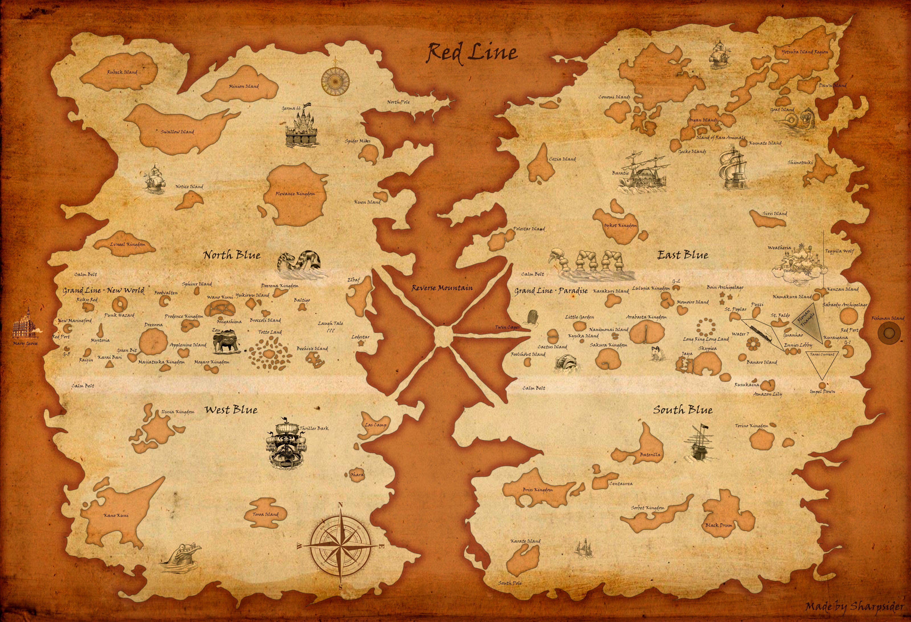

El Viaje del Rey de los Piratas
One Piece es un manga creado por Eiichirō Oda, publicado en Weekly Shōnen Jump desde 1997. Narra las aventuras de Monkey D. Luffy y su tripulación, los Piratas del Sombrero de Paja, en su búsqueda del legendario tesoro "One Piece", con el objetivo de convertir a Luffy en el Rey de los Piratas. Es el manga más vendido de la historia de Japón, con más de 516 millones de copias en todo el mundo y un Récord Guinness por la mayor cantidad de copias publicadas de un mismo cómic por un solo autor. Dominó las ventas en Japón de 2007 a 2018 y fue elegido el mejor manga de la historia en una encuesta de TV Asahi. La franquicia incluye una adaptación de anime, películas, videojuegos, novelas ligeras, spin-offs y una serie live-action.
Durante su viaje, Luffy forma una tripulación única y enfrenta poderosos enemigos, como la Marina, los Siete Guerreros del Mar y los Cuatro Emperadores.
